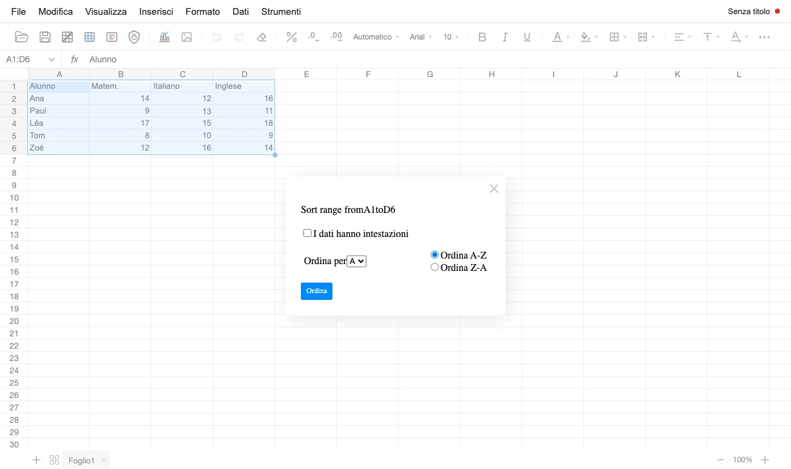
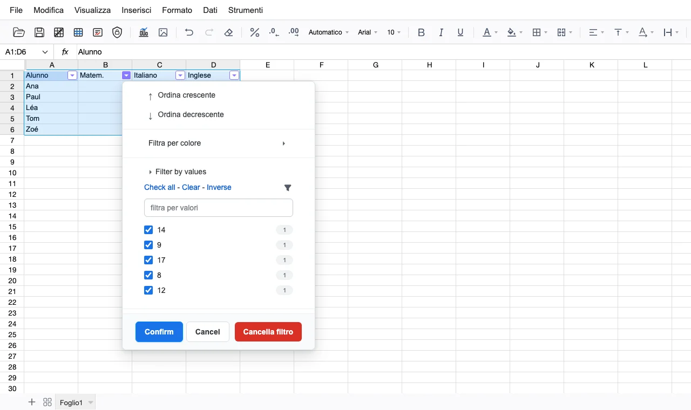
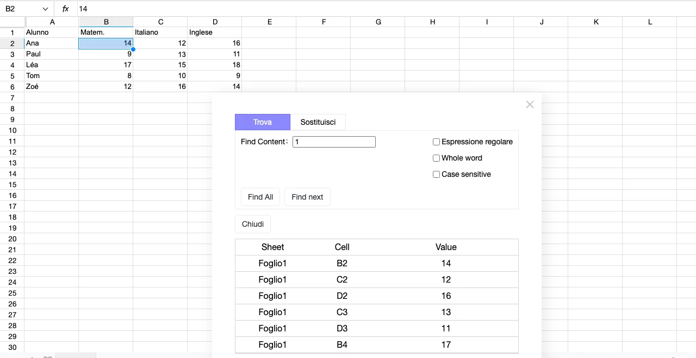

Ordinare, filtrare, cercare
Ordinare
| Comando | Effetto |
|---|---|
| Dati › Ordina e filtra › Ordina A-Z, Ordina Z-A | ordina la selezione secondo la prima colonna; anche con e con il clic destro |
| clic destro › Ordina selezione | sceglie la colonna, l’ordine, e se la prima riga è un’intestazione |

Selezionare tutta la tabella, non una sola colonna: le righe devono restare intere. Un intervallo che contiene celle unite non si ordina.
Filtrare
- Selezionare la tabella, intestazione compresa.
- Dati › Ordina e filtra › Crea filtro, o , o clic destro › Filtra selezione.
- Fare clic sulla freccia di una colonna.

| Nel menu di una colonna | Effetto |
|---|---|
| Ordina crescente, Ordina decrescente | ordina le righe della tabella |
| Filtra per colore | secondo il colore dello sfondo o del testo |
| Filter by values | spuntare i valori da tenere; Check all, Clear, Inverse; il campo cerca un valore |
| Confirm | applica |
| Cancella filtro | toglie il filtro della tabella |
Le righe escluse sono nascoste, non eliminate. I filtri di più colonne si sommano. Dati › Ordina e filtra › Cancella filtro toglie il filtro.
Cercare, sostituire
Ctrl F apre Trova, Ctrl H Sostituisci.

| Opzione | Effetto |
|---|---|
| Espressione regolare | il testo cercato è un’espressione regolare: ^A trova ciò che comincia per A |
| Whole word | l’intera cella è uguale al testo |
| Case sensitive | distingue maiuscole e minuscole |
| Find All | elenca le celle trovate; un clic su una riga vi porta |
| Find next | va alla successiva |
| Replace, Replace All | una cella, tutte |
La ricerca riguarda il foglio mostrato.